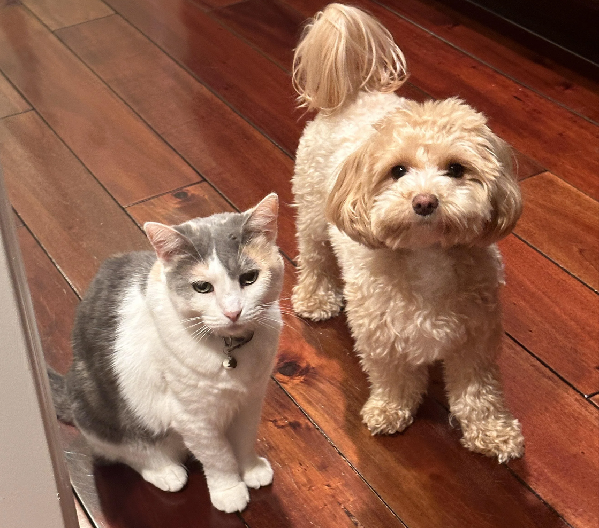
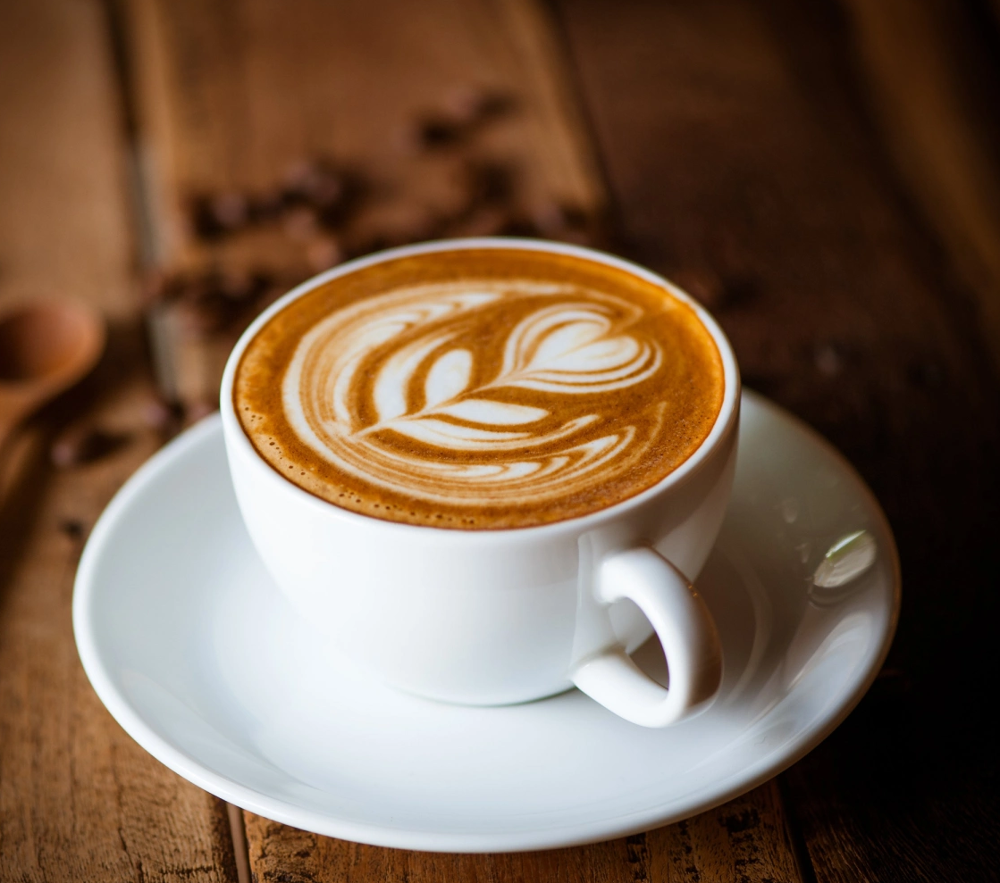

Hello, my name is Omar Real, and at the time of writing this I am 17 years old. I live in California and am currently attending El Camino High School. School keeps me busy, but I also like to make time for the things I’m passionate about and the hobbies that make me who I am.

One of my biggest interests is sports. While I do not play the I enjoy watching both basketball and football, and my favorite teams are the Baltimore Ravens and the Detroit Pistons. What really makes sports exciting for me isn’t just the games themselves, but also the storylines that come along with them—the rivalries, the comebacks, the underdog victories, and the moments that bring out real emotion. Sports feel like more than entertainment; they’re a mix of competition and storytelling that I can always connect with.
Outside of sports, I have a lot of other interests that make up my daily life. I like cats and dogs, even though I’m unfortunately very allergic to both. I also enjoy drinking coffee, although I can’t handle it when it’s completely black—it has to be mixed just right. Spending time with my friends and family is really important to me, and I love getting the chance to try new things and experience activities I wouldn’t normally do. Those moments give me memories that stick with me and help me grow.

In my about me page I have an embedded video that usually helps me go to sleep and makes me relax and or be more productive and study harder. I have multiple pictures of some of my favorite things showing that I know how to style my images.